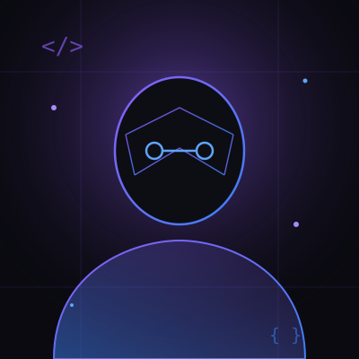

// 01_about
Get to know me a little better.

// who-i-am
Hi, I'm Agung — a student who loves building things.
I'm a high school student at SMKN 6 Surakarta, majoring in PPLG (Software and Game Development). I got into programming out of curiosity — wanting to know how the websites and apps I used every day actually worked — and that curiosity turned into a genuine passion.
I enjoy learning new programming concepts, building websites from scratch, and figuring out how to solve problems logically and efficiently. I care about writing clean, understandable code and designing interfaces that feel good to use.
Beyond the technical side, I value teamwork and communication. Most of my school projects are collaborative, and I've learned that good software is rarely built alone. I'm creative, curious, and always looking for the next skill to pick up on my way to becoming a professional software engineer.
- Full NameAgung Setiyadi Widyanto
- SchoolSMKN 6 Surakarta
- MajorPPLG (Software & Game Dev.)
- Based InSurakarta, Central Java, ID
- FocusWeb & Front-End Development
- StatusOpen to internships
// 02_education
Education
// 03_experience
Experience & Journey
How I've grown as a developer so far, one project and one lesson at a time.
// 04_achievements